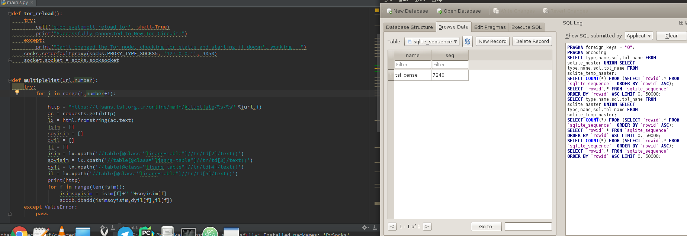

Selamlar arkadaşlar bu postta twitterda bir arkadaşımın paylaştığı linkte bulunan verileri çekeceğiz.Bu kod beni baya bi uğraştırdı. Aslında uğraştırmaması gerekiyordu fakat ilk olarak parse etmek için regex kullanmayı düşündüm.Fakat regex ile yeterince hızlı olmuyordu bu işlem xpath kullanmak istedim işte tüm sorunlar bundan sonra başladı.Öncelikle çekeceğimiz linki vereyim. TSF.Org.TR Siteye girdiğinizde eğer bir külubü görüntülerseniz özel id atandığını göreceksiniz.Yani aslında arkaplanda post ile verileri alırken 206 id li veriyi çekiyor fakat adress bar da bu 100545254 şeklinde gözükmekte. Eğer bunu farketmeseydim her döngüde 1 artan bir değişkenle işimi halletmeye çalışacaktım.Bu işlem epey uzun oluyordu :)
Bende xpath ile o açılır menüde ki kulüplerin id lerini ve isimlerini aldım.Daha sonra bi def içinde gerekli olan sayfayı bulup ona göre döngüye devam ediyordu.
Fakat bu büyük bir soruna yol açtı bunu sadece 1 kere yapıyordu.Yani 25 sayfa aldıysa sonradan yeniden sayfalar açılırsa ( Ki bazı kulüpler 2600 sayfa ) bunu es geçiyordu.
Neyse kodumuzun ilk haline bakalım.( Hataları olabilir bir süre sonra elleşmedim oraya hiç )
import requests
from lxml import html
import adddb
disct = {}
def analyze(i):
url = "https://lisans.tsf.org.tr/online/main/kulupliste/%s" %i
ac = requests.get(url)
lx = html.fromstring(ac.text)
global sayfaid
sayfaid = lx.xpath('//div[@class="pagenavdiv"]/a[@href]/text()')
print(sayfaid)
if sayfaid == []:
return False
else:
return True
def multiplelist(url,number):
try:
http = "https://lisans.tsf.org.tr/online/main/kulupliste/%s/%s" %(url,number)
ac = requests.get(http)
lx = html.fromstring(ac.text)
global isim,soyisim,dyil,il
isim = lx.xpath('//table[@class="lisans-table"]//tr/td[2]/text()')
soyisim = lx.xpath('//table[@class="lisans-table"]//tr/td[3]/text()')
dyil = lx.xpath('//table[@class="lisans-table"]//tr/td[4]/text()')
il = lx.xpath('//table[@class="lisans-table"]//tr/td[5]/text()')
except ValueError:
pass
url = "https://lisans.tsf.org.tr/online/main/kulupliste"
ac = requests.get(url)
lx = html.fromstring(ac.text)
id = lx.xpath('/html/body//option/@value')
for i in id:
if analyze(i) == False:
multiplelist(i,"1")
else:
for u in sayfaid:
if u == "Son":
analyze(sayfaid[-3])
print(i)
multiplelist(i,u)
for i in range(len(isim)):
isimsoyisim = isim[i]+" "+soyisim[i]
disct[isimsoyisim] = dyil[i],il[i]
for k,v in disct.items():
adddb.dbadd(k,v[0],v[1])
```
Gördüğünüz gibi burada analiz ettikten sonra artık değişen birşey olmuyordu.
Üstelik bütün siteyi parse ettikten sonra db ye ekliyordu bu da herhangi bir hata da hiç bir verinin kaydedilemeyeceği anlamına geliyordu.
Ama bundan önce bütün listelerin parse edilip tekrar aynı id ile birleştirilmesi ( Plaza dilinde ** comprasion ** deniliyor sanırım )
Koddan anlayabilirsiniz zaten buda bir sürü soruna sebep oldu.Verilerin tam kaydedilmemesi üst üste gelmesi yani verilerde eksik bulunuyordu.
Neyse kod şu hale update edildi ( En sorunsuz sürüm sanırım )
```python
import requests
from lxml import html
import adddb
def multiplelist(url,number):
try:
for i in range(1,number+1):
http = "https://lisans.tsf.org.tr/online/main/kulupliste/%s/%s" %(url,i)
ac = requests.get(http)
lx = html.fromstring(ac.text)
isim = []
soyisim = []
dyil = []
il = []
isim = lx.xpath('//table[@class="lisans-table"]//tr/td[2]/text()')
soyisim = lx.xpath('//table[@class="lisans-table"]//tr/td[3]/text()')
dyil = lx.xpath('//table[@class="lisans-table"]//tr/td[4]/text()')
il = lx.xpath('//table[@class="lisans-table"]//tr/td[5]/text()')
print(http)
for f in range(len(isim)):
isimsoyisim = isim[f]+" "+soyisim[f]
adddb.dbadd(isimsoyisim,dyil[f],il[f])
except ValueError:
pass
sayfasayisi = []
url = "https://lisans.tsf.org.tr/online/main/kulupliste"
ac = requests.get(url)
lx = html.fromstring(ac.text)
id = lx.xpath('/html/body//option/@value')
data = lx.xpath('/html/body//option/text()')
for i in data:
i = re.findall("([0-9]{0,9}).Sporcu",i)
i = ''.join(i)
i = int(i)//15
i = i+1
sayfasayisi.append(i)
for i,u in zip(id,sayfasayisi):
multiplelist(i,u)
Bu da iyi hoştu ama netim sağlam olmadığı için arkadaşlarda çalıştırdığımızda verileri tam olarak çekmiyordu toplamda 9000 küsür veri çekiyordu.Büyük ihtimal sunucumuz belli bir request den sonra bizi drop ediyordu ve bizde çok az veri yazabiliyorduk.
Neyse buna da bir çözüm bulduk.Daha önce Robin Dimyan bilmem ne :D adlı arkadaşın kodunda kullandığı tor reload kullandım.Test ettiğimde sorunsuz gözüküyordu fakat siteyi tam olarak çekemedim ne yazık ki.
Neyse kodun son hali aşağıda ki şekildedir.
import requests,socks,socket
from subprocess import call
from lxml import html
import adddb,re
def tor_reload():
try:
call('sudo systemctl reload tor', shell=True)
print("Successfully Connected to New Tor Circuit!")
except:
print("Can't changed the Tor node, checking tor status and starting if doesn't working...")
socks.setdefaultproxy(socks.PROXY_TYPE_SOCKS5, '127.0.0.1', 9050)
socket.socket = socks.socksocket
def multiplelist(url,number):
try:
for i in range(1,number+1):
http = "https://lisans.tsf.org.tr/online/main/kulupliste/%s/%s" %(url,i)
ac = requests.get(http)
lx = html.fromstring(ac.text)
isim = []
soyisim = []
dyil = []
il = []
isim = lx.xpath('//table[@class="lisans-table"]//tr/td[2]/text()')
soyisim = lx.xpath('//table[@class="lisans-table"]//tr/td[3]/text()')
dyil = lx.xpath('//table[@class="lisans-table"]//tr/td[4]/text()')
il = lx.xpath('//table[@class="lisans-table"]//tr/td[5]/text()')
print(http)
for f in range(len(isim)):
isimsoyisim = isim[f]+" "+soyisim[f]
adddb.dbadd(isimsoyisim,dyil[f],il[f])
except ValueError:
pass
sayfasayisi = []
url = "https://lisans.tsf.org.tr/online/main/kulupliste"
ac = requests.get(url)
lx = html.fromstring(ac.text)
id = lx.xpath('/html/body//option/@value')
data = lx.xpath('/html/body//option/text()')
for i in data:
i = re.findall("([0-9]{0,9}).Sporcu",i)
i = ''.join(i)
i = int(i)//15
i = i+1
sayfasayisi.append(i)
for i,u in zip(id,sayfasayisi):
multiplelist(i,u)
tor_reload()
 Bu arada burada kodda sayfa sayısını toplamsporcu//15+1 ile alıyorum.Hiç değilse daha sağlıklı oluyor.
Scriptte kullandığım diğer kodlar şu şekildedir.
import sqlite3
def dbadd(isim,yil,il):
op = sqlite3.connect("tsf.db")
cs = op.cursor()
cs.execute("INSERT INTO tsflicense(isim,dyil,il) VALUES (?,?,?)",(isim,yil,il,))
op.commit()
op.close()
import sqlite3
op = sqlite3.connect("tsf.db")
cs = op.cursor()
cs.execute("CREATE TABLE tsflicense(id integer primary key AUTOINCREMENT,isim TEXT,dyil text,il text)")
op.commit()
op.close()